Arboles:
Tengo que completarlo jks.
Los Árboles que no producen frutas se clasifican en dos tipos: comunes y especiales. Los árboles comunes (Arce, Roble, Pino y Caoba) son valiosos recursos naturales, siendo la fuente primaria de múltiples productos: Madera para la construcción y la fabricación, Savia, Jarabe de arce, Resina de roble y Brea de pino. Los árboles especiales tienen sus propias características.
Árboles comunes
Crecimiento
Un Árbol maduro (fase 5) se puede sacudir para obtener una semilla (ver el Ciclo de crecimiento), Es posible colocar resineras para obtener jarabe, o talarlo con un Hacha. Cuando se talan, los árboles siempre caen a la izquierda o a la derecha del jugador (si es aplicable) y producen madera o semillas en la dirección de la caída. Cuando se talan desde arriba o desde abajo, el jugador debe tratar de pararse descentrado en la casilla para asegurar claramente la dirección. Si el Árbol está junto a una pared, quedarse cerca de la pared asegura de que caiga en el espacio estimado. Si el Árbol cae dentro o cerca del agua, los objetos que caigan pueden desaparecer en el agua. El Magnetismo alto es muy útil para recolectar rápidamente los objetos dispersos. Los productos (sin incluir los del tocón) son:
-
 Madera (12-16), excepto en Árboles de caoba. Las 4 unidades de madera de bonificación posibles se agregan al azar, según la Suerte y la habilidad de Recolección. Para los jugadores con la profesión Guardabosques, la cantidad es un 25 % más grande (15 a 20 de madera).
Madera (12-16), excepto en Árboles de caoba. Las 4 unidades de madera de bonificación posibles se agregan al azar, según la Suerte y la habilidad de Recolección. Para los jugadores con la profesión Guardabosques, la cantidad es un 25 % más grande (15 a 20 de madera). -
 Madera noble (10) para Árboles de caoba. Para los jugadores con la profesión Guardabosques, las cantidades son un 25 % más grandes (12 o 13 de madera noble).
Madera noble (10) para Árboles de caoba. Para los jugadores con la profesión Guardabosques, las cantidades son un 25 % más grandes (12 o 13 de madera noble). -
 Savia (5)
Savia (5) - 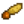 Semilla de arce (0-2), 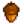 Bellota (0-2), 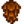 Piña (0-2) o 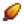 Semilla de caoba (0-1), según la especie de Árbol. Estos se suman a la posible semilla "extra" que puede caer al sacudir el Árbol. Todas las semillas solo son posibles si la habilidad de Recolección es al menos nivel 1.
- Madera noble, si el jugador tiene la profesión Leñador. La cantidad de madera es aleatoria: 50% de probabilidad de 0 piezas; 25% 1 pieza; 12,5% 2 piezas; 6,25% 3 piezas; 3,125% 4 piezas; etc. (sin ningún número máximo fijo).
- 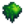 Musgo (1-2) cualquier día que no sea de Invierno
- 12 de XP en Recolección.
Cuando se coloca una Resinera, un Árbol no se puede talar ni sacudir para obtener una semilla, a menos que primero se retire la Resinera.
Después de talar un árbol maduro, queda un tocón. Quitar el tocón con un Hacha deja:
- Madera (4-9)
- En un jugador, el 5 es el mínimo, más 4 unidades de bonificación se agregan aleatoriamente, según la Suerte y la habilidad de Recolección. Para los jugadores con la profesión Guardabosques, la cantidad total es de 6 a 11 de madera.
- En el modo multijugador, la cantidad se fija en 4 de madera (5 con Guardabosques ).
- Savia (1)
- 1 de XP de Recolección.
En la fase 4 de crecimiento, los árboles se pueden talar con un Hacha. Los ítems son:
- Madera (4) (5 para la profesión Guardabosques)
En las fases 2 y 3 de crecimiento, los árboles se pueden talar usando alguna Hacha, Azada, Pico, Guadaña u Arma. Si no se usa un hacha, no se arroja ningún ítem.
- Madera (1) puede caer si se usa un hacha. El porcentaje de probabilidad es diez veces el nivel de Recolección del jugador (se garantiza en el nivel 10), incluyendo los Bonificadores.
En la fase 1 de crecimiento, las semillas de los Árboles se pueden quitar del suelo usando algún Hacha, Azada o Pico. El único objeto soltado es la misma semilla.
Ciclo de crecimiento
Cada día, hay un 5% de probabilidad de que un Árbol maduro genere una semilla "extra". Esta semilla caerá si el jugador sacude el Árbol. Normalmente, la semilla extra coincide con la especie de Árbol maduro, con una excepción: durante las últimas dos semanas del Otoño, sacudir un Árbol de Arce deja una Avellana en lugar de una Semilla de arce. Hay que tener en cuenta que se debe alcanzar el Nivel 1 de Recolección antes de que las semillas de Árboles estén disponibles, lo que incluye dormir durante la noche y recibir la notificación de aumento de nivel.
Además, los Árboles maduros (incluidos los tocones) en la granja tienen un 15% de probabilidad cada noche de tratar de plantar espontáneamente una semilla en el suelo. Se elige una casilla al azar, hasta 3 casillas de distancia del Árbol origen en cualquier dirección. La semilla se "planta", creando un nuevo Árbol de fase 1 de crecimiento, solo si la casilla es una ubicación válida para un nuevo Árbol. En particular, la casilla elegida debe estar vacía; los Árboles no destruirán caminos ni cultivos.
Las semillas plantadas pasan por cuatro etapas antes de alcanzar la madurez. Las semillas de los Árboles no requieren riego, ni requieren que la tierra circundante esté vacía (a diferencia de los Árboles frutales): la tierra puede estar completamente pavimentada; los Árboles pueden plantarse junto al agua u otras casillas (ejemplo pasto, nieve etc.). Mientras la semilla se pueda colocar en el suelo, puede crecer. La única limitación en el crecimiento de Árboles, es que dos Árboles maduros no pueden estar uno al lado del otro: un Árbol joven nunca crecerá más allá de la etapa 4 si hay un Árbol maduro en cualquiera de las ocho casillas que lo rodean.
Con el Fertilizante de árboles, los Árboles crecerán una fase cada noche, excepto en la fase 4, que tarda 2 días. En total, una semilla fertilizada tarda 5 días en alcanzar la madurez. Las semillas y Árboles jovenes fertilizados crecerán incluso en Invierno; de lo contrario, los Árboles no crecerán en Invierno.
Sin fertilizante, los Árboles jovenes tienen un 20% de probabilidad cada noche de crecer a la siguiente fase, excepto en la fase 4, donde se necesita el doble de tiempo. El tiempo medio de crecimiento desde la semilla hasta la madurez es de 24 días, aunque los tiempos de crecimiento de los Árboles varían considerablemente. Estadísticamente, el 90% de las semillas deberían alcanzar la madurez en 38 días (excluyendo el Invierno) y el 99% en 55 días.
Fuera de la Granja
Los Árboles comunes plantados en el Bosque Tizón, La montaña, el Ferrocarril, la Cantera, la Parada de autobús y en el Bosque secreto pueden ser talados, puestos con una resinera, o sacudidos para soltar una semilla. Sin embargo, los jugadores no pueden interactuar con los árboles de Pueblo Pelícano.
Fuera de La Granja, los Árboles nunca esparcen espontáneamente las semillas plantadas. Sin embargo, el jugador puede plantar semillas en cualquier terreno cultivable (siempre que el suelo no esté cultivado), que pasará por las fases de crecimiento estándar.
Todos los Árboles preexistentes que se talan fuera de La Granja y se quitan los tocones tienen un 20% de probabilidad por noche de reaparecer como un Árbol joven de etapa 3 (incluso en Invierno). Después de reaparecer, crecerá normalmente hasta convertirse en un Árbol maduro. Si no se quita el tocón, el Árbol no volverá a crecer.
Rayos
A diferencia de los Árboles frutales, que producen Carbón durante 3 o 4 días después de ser golpeados por un rayo, los Árboles comunes golpeados por un rayo son destruidos, dejando solo un tocón (y algo de madera o savia).
Arce
El Arce crece de una Maple Semilla de arce. Cuando se le coloca una Resinera, producirá  Jarabe de arce cada 9 días (4-5 días con Grifo pesado). Los arces pueden dejar caer alguna Avellana durante las últimas 2 semanas del Otoño
Jarabe de arce cada 9 días (4-5 días con Grifo pesado). Los arces pueden dejar caer alguna Avellana durante las últimas 2 semanas del Otoño
El Jarabe de arce es el más rentable de los 3 tipos de jarabe de árbol comunes.
| Fase 1 | Fase 2 | Fase 3 | Fase 4 | Fase 5 - Primavera, Verano, Otoño, Invierno | Tocón - Primavera, Verano, Otoño, Invierno |
|---|---|---|---|---|---|
| 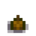 | 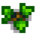 | 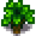 | 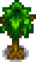 | 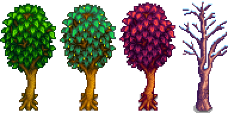 |  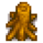 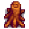 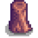 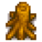 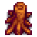 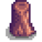 |
Roble
El Roble crece de una Bellota. Cuando se le coloca una Resinera, producirá  Resina de roble cada 7-8 días (3-4 días con Grifo pesado).
Resina de roble cada 7-8 días (3-4 días con Grifo pesado).
| Fase 1 | Fase 2 | Fase 3 | Fase 4 | Fase 5 - Primavera, Verano, Otoño, Invierno | Tocón - Primavera, Verano, Otoño, Invierno |
|---|---|---|---|---|---|
| 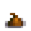 | 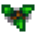 | 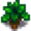 | 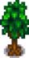 | 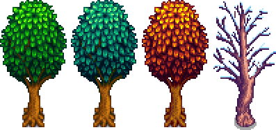 | 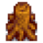 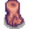 |
| Fase 1 | Fase 2 | Fase 3 | Fase 4 | Fase 5 - Primavera, Verano, Otoño, Invierno | Tocón - Primavera, Verano, Otoño, Invierno |
|---|---|---|---|---|---|
 |
|
|
|
|
|
| Fase 1 | Fase 2 | Fase 3 | Fase 4 | Fase 5 - Primavera, Verano, Otoño, Invierno | Tocón - Primavera, Verano, Otoño, Invierno |
|---|---|---|---|---|---|
| |
|
|
|
|
|
| Fase 1 | Fase 2 | Fase 3 | Fase 4 | Fase 5 - Primavera, Verano, Otoño, Invierno | Tocón - Primavera, Verano, Otoño, Invierno |
|---|---|---|---|---|---|
| |
|
|
|
|
|